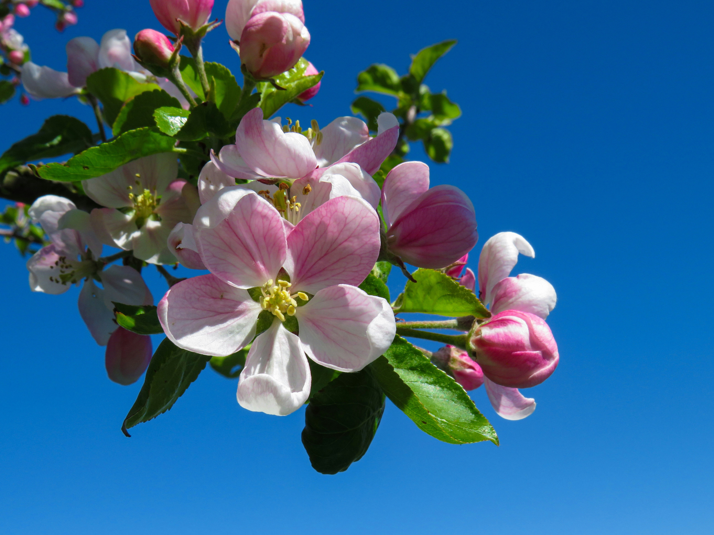

Wissenswertes
Hier finden Sie hilfreiche Informationen zu Obst, Gemüse, Kräutern und anderen Gartenpflanzen.

Apfelbaum
Sonne/Halbschatten • Ernte im Herbst
×


Apfelbaum
Malus domestica
Kateogrie:Obst
Jahreszeit:Herbst
Standort:Sonnig bis halbschattig
Pflanzzeit:Herbst oder Frühjahr
Pflege:Regelmäßig schneiden und bei Trockenheit gießen
Ernte:August bis Oktober
Verwendung:Apfelmus, Kuchen, Saft oder Kompott